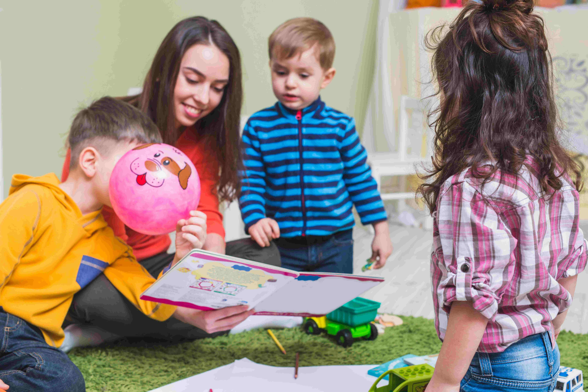
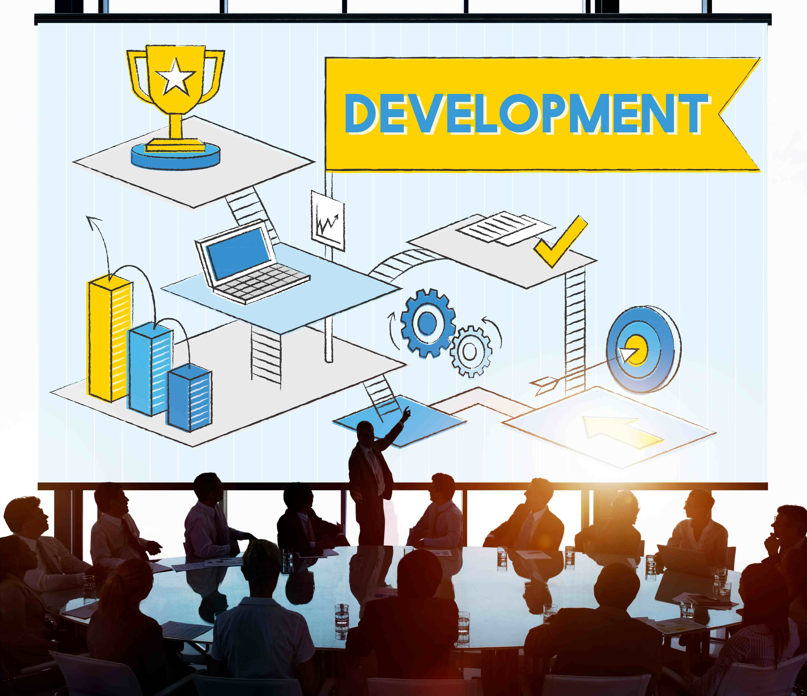

Our Targets for Quality Education
📚 1. Universal Access to Quality Education
By 2030, all girls and boys should complete free, equitable, and high-quality primary and secondary education. This education should lead to relevant and effective learning outcomes, equipping students with essential skills for their future.
Key Indicators:
- Proportion of students achieving minimum proficiency in reading and mathematics in primary and secondary education.
- Completion rates at the primary, lower secondary, and upper secondary levels.
👶 2. Early Childhood Development and Pre-primary Education
Early childhood education is crucial for cognitive, social, and emotional development. By 2030, all children should have access to quality early childhood care and pre-primary education to ensure they are ready for formal schooling.
Key Indicators:
- Percentage of children aged 24–59 months who are developmentally on track in health, learning, and psychosocial well-being.
- Participation rate in organized early learning programs one year before official primary entry age.
🏫 3. Equal Access to Higher Education and Vocational Training
Higher education, technical training, and lifelong learning opportunities must be accessible to all, regardless of gender, socioeconomic status, or geographic location. By 2030, more individuals should have access to affordable and quality university education and vocational training programs.
Key Indicators:
- Participation rate of youth and adults in formal and non-formal education and training within the past 12 months.
💼 4. Skills for Employment and Entrepreneurship
Education should prepare students for the job market by equipping them with relevant skills, including technical, vocational, and digital competencies. By 2030, the number of young people and adults with these skills should significantly increase.
Key Indicators:
- Proportion of individuals with Information and Communications Technology (ICT) skills.
🚺 5. Eliminating Gender Disparities in Education

Gender disparities in education must be eliminated, ensuring that all children—including those from marginalized communities, indigenous backgrounds, or with disabilities—have access to quality learning opportunities.
Key Indicators:
- Parity indices measuring gender, urban/rural location, wealth status, and other factors affecting education access.
📖 6. Promoting Literacy and Numeracy
By 2030, all youth and a significant portion of adults should achieve at least a basic level of literacy and numeracy, enabling them to participate effectively in society and the workforce.
Key Indicators:
- Proportion of the population demonstrating basic literacy and numeracy skills.
🌱 7. Education for Sustainable Development and Global Citizenship
Education should promote sustainable development, human rights, gender equality, and a culture of peace. Curricula should include topics related to environmental conservation, responsible citizenship, and cultural appreciation.
Key Indicators:
- Extent to which global citizenship and sustainability education are integrated into national policies and curricula.
🏢 8. Safe, Inclusive, and Effective Learning Environments
Schools should be equipped with modern facilities that are accessible to all students, including those with disabilities. Safe and non-violent learning environments are essential for student well-being and academic success.
Key Indicators:
- Proportion of schools with access to basic services like clean water, electricity, and internet connectivity.
🌍 9. Expanding Scholarships and International Educational Support
Scholarships and financial aid programs should be expanded to help students from low-income and developing countries access higher education and specialized training programs abroad.
Key Indicators:
- Volume of international development assistance allocated for scholarships in higher education.
👩🏫 10. Increasing the Supply of Qualified Teachers
Qualified teachers are critical to delivering quality education. By 2030, more efforts should be made to train and recruit teachers, particularly in developing regions where shortages persist.
Key Indicators:
- Proportion of teachers with the required qualifications across different education levels.